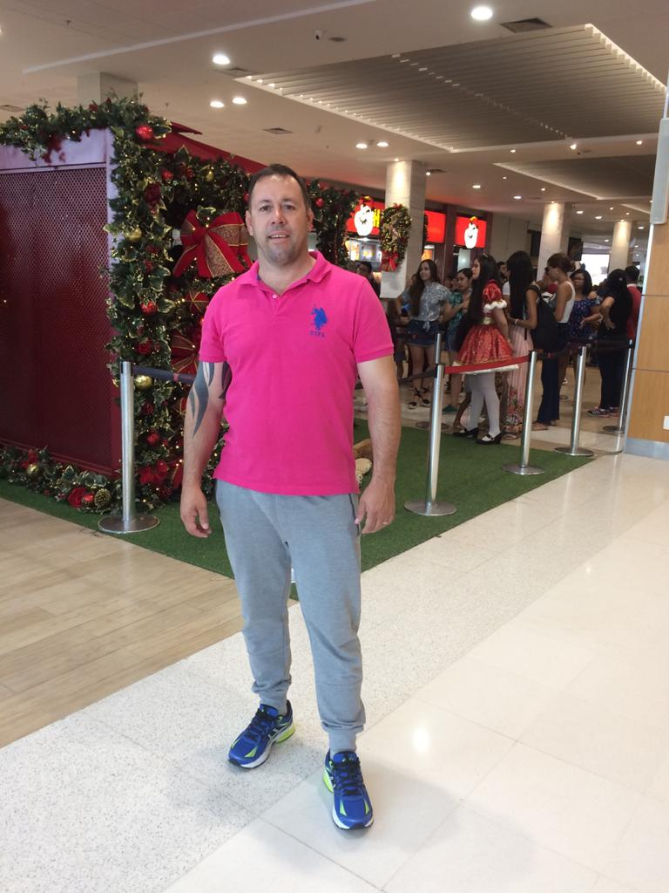
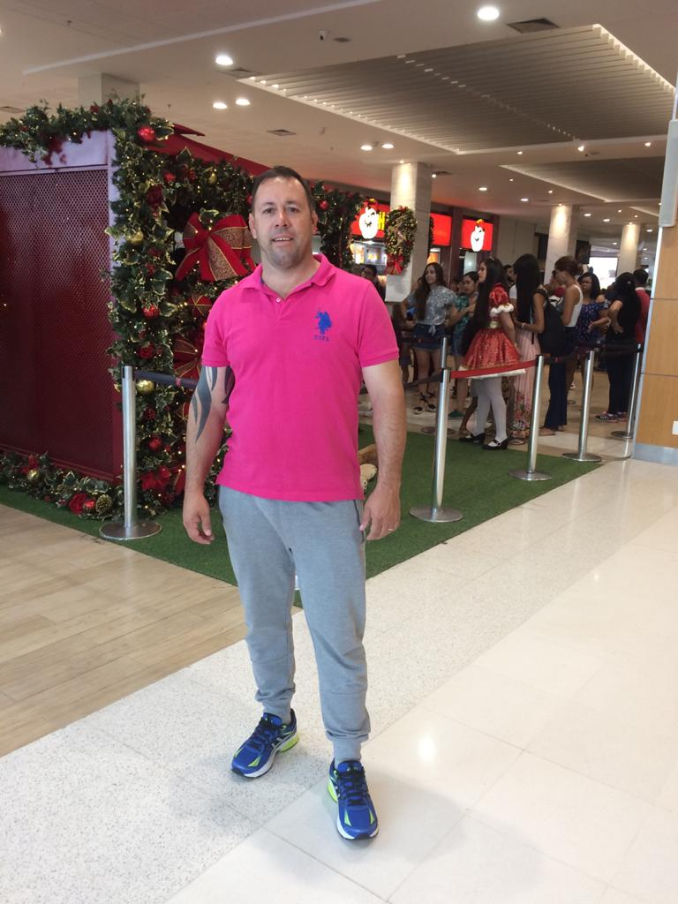
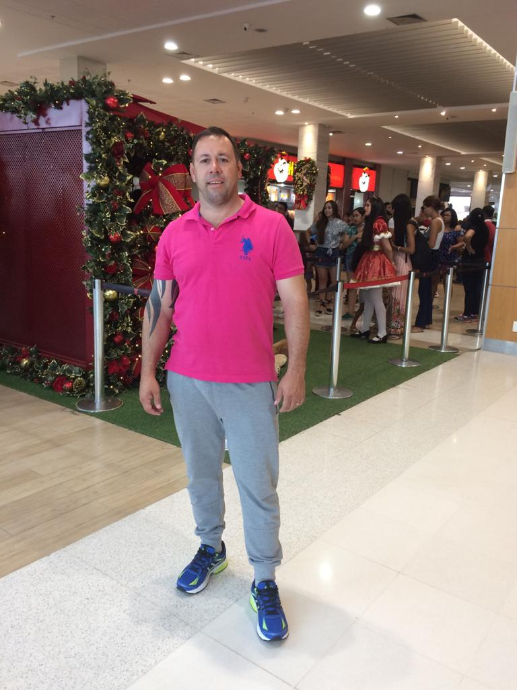
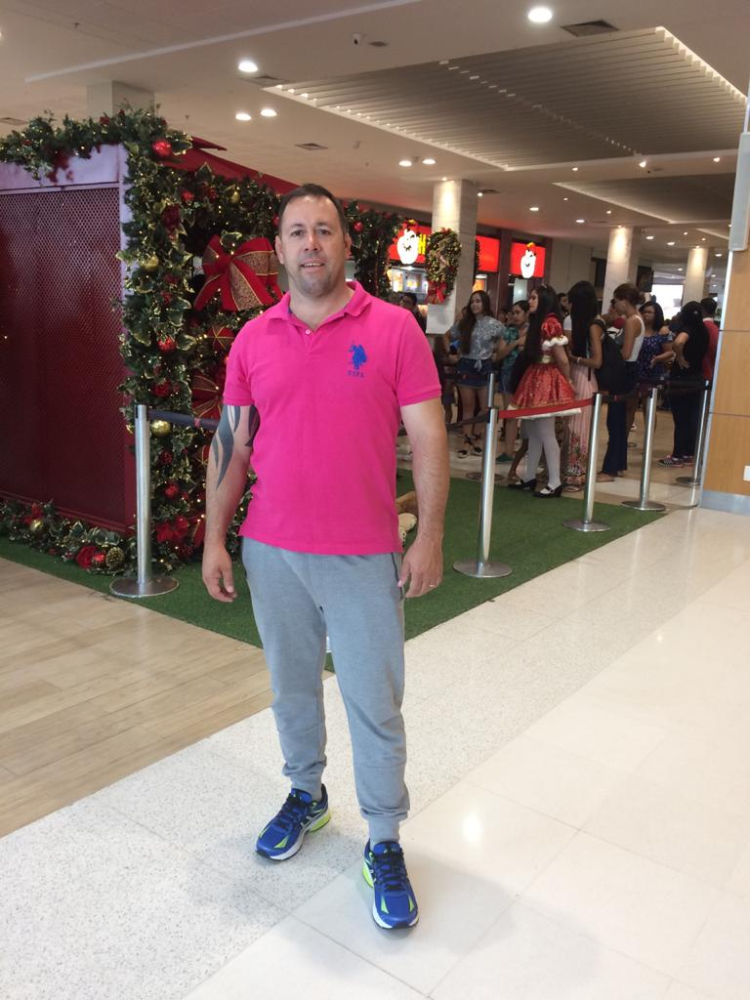
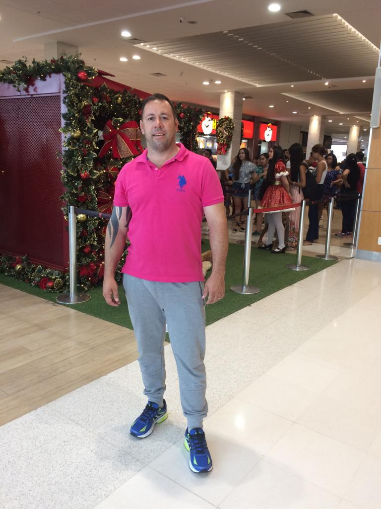

BlogToby
foto
biográfia
Toby
História de um Cachorro Perigso
Me chamo toby tenho 3 anos quando pequeno vim de Saõ Paulo, uma viagem emocionante onde iria encontrar meus futuros donos.
começou quando era filhote muito levado na casa onde nasci ja aprontava todas com meus irmãos , mas nao esperava que logo minha aventura iria começar longe dali, pois estava já vendido pra uma familia que morava em Brasília logo comecei meus preparativos para encontra-los tomando vacinas não muito bom pois era dolorido kkkk, tive um dia de beleza direito a tudo ate spar mas nao sabia que o pior estava por vir era a despedida teria que dizer a deus a todos meus irmão, pai e mãe pois apartir dali teria outra familia, em fim está hora chegou mas não sabia muito bem o que estava acontecento acho que algo estava errado tava com muito sono e mole então talves até tenha sido melhor pois quando melhorei ja estava nos braços do meu novo dono o que tinha sentido na viagem foi só o som do avião e o sobe e desce e o frio que da na barriga, meus donos logo me acolheram com carinho e me limparam pois estava todo sujo kkk desvio de percurso kkkk ali ja começou minhas atividades , assim estou hoje com minha familia que amo muito e com certeza ele me amam também pois nunca faltou nada , compahia, comida, carinho, e toda dedicação eu tenho deles, hum ia me esquecendo conheci uma cachorra muito perigosa em meus sonhos ui que aventura que vivemos,passavamos a noite toda nas ruas correndo atrás de comida e travessuras que momentos incríveis era a cachorra do meus sonhos kk em fim esse sou eu Toby um cachorro perigoso kkkk auauau.

Por: Adeylton Lopes de Sá
15/03/2024
 


